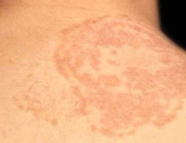

皮肤癣的七大类型
- 头癣
- 体癣
- 手癣
- 足癣
- 花斑癣
- 甲癣
- 股癣
-
体癣
除去头部、掌跖、腹股沟、阴性部和甲以外，人体表面光滑皮肤感染皮肤癣菌所发生的皮肤病统称为体癣。又名圆癣或金钱癣。主要见青壮年及男性，多夏季发病。好发于面部、躯干及四肢近端。引起很轻的炎症反应，发生红斑、丘疹、水疱等损害，继之脱屑。
我也有类似症状 我要咨询 -
手癣
手癣是发生于掌面的浅部真菌病，与医学"鹅掌风"表现雷同。可以是原发，但是多数是从足癣自身传染而来。为手掌的皮肤癣菌感染。起病于手掌某一部位，缓慢扩大，最终累及大部或全部甚至两侧手掌。损害为红斑、水疱、鳞屑和角化增厚。
我也有类似症状 我要咨询 -

足癣
以皮下水疱、趾间浸渍糜烂、渗流滋水、角化过度、脱屑等为特征。本病菌好发于趾间，尤其是第三四趾缝。这同上述部位皮肤密切接触、潮湿、不通气，汗蒸发较差有关。足癣皮损表现一般分为以下三型：1、水疱型；2、趾间糜烂型；3、鳞屑角化型。
我也有类似症状 我要咨询 -

花斑癣
花斑癣因紫斑、白斑交替存在，故中医命名紫白殿风。鉴于夏季出汗皮疹斐然，又俗称汗斑。本病是由寄生于表皮角层的花斑癣菌所引起的。花斑癣惯发于颈和胸背部位。一般无自觉症状，偶尔出汗时稍有痒感。
我也有类似症状 我要咨询 -
甲癣
甲癣是甲部感染皮肤癣菌所致的，初起甲床微痒，继之则指（趾）甲变色，甲板高低不平，失去光泽，逐渐增厚，或蛀空而残缺不全或变脆，常与甲床分离。一般无自觉症状，少数有轻度瘙痒。
我也有类似症状 我要咨询 -
股癣
是指股内侧、会阴、臀部感染真菌后引起的皮肤病。通过内衣、浴巾，性等传播。该病与体癣有下面几点不同：一：损害形态罕见呈圆形或椭圆形，多为不规则形或弧形；二：皮损往往表现为苔藓样变或急性、亚急性湿疹样变；三：较容易并发细菌感染；四：股癣自觉痒更为剧烈。
我也有类似症状 我要咨询